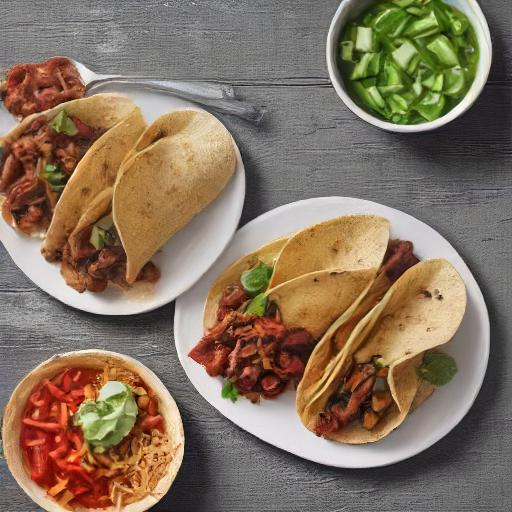

Tacos

Description
Tacos are a popular hand-sized food item originating from Mexico. They consist of a tortilla made from either wheat or corn, filled with a variety of ingredients. Typically, tacos are seasoned with a spicy salsa and are meant to be eaten by hand.
In the United States, tacos have gained significant popularity. Fast-food chains like Taco Bell specialize in Tex-Mex dishes, including various types of tacos. American-style tacos can be made with soft flour tortillas or crispy corn shells filled with ingredients like ground beef, lettuce, onions, tomatoes, and cheese (often Cheddar). Tacos can also be customized with toppings like sour cream or chili sauce and come in vegetarian options or with different proteins like grilled steak or chicken.
This recipe is my take on tacos. I hope you enjoy it!
Ingredients
- 1 lb ground beef
- 1/2 cup water
- 8 oz shredded mozzarella
- 8 oz shredded cheddar
- 16 oz sour cream
- 1 packet of Old El Paso taco seasoning
- 12 pack of taco shells, tortilla shells, or large bag of white tortilla chips
- 1/2 onion--diced
- 1 bunch of green onions--chopped
- 1 tomato--diced
- 1 medium can of refried beans
Steps
- Brown the ground beef in large skillet on stove-top at med-high.
- Drain fat from the beef.
- Add taco seasoning and water to the beef and cook for 5 minutes on med-high
- Add refried beans to seasoned beef and mix in skillet.
- Cook mixture for 10 minutes on medium heat
- Reduce to a simmer.
- Heat shells or tortillas, according to package instructions
- Lay out all ingredients on serving table so that they are easily accessible.
- Remove meat from heat and place skillet on a pot holder with other ingredients.
- Supply utensils for each ingredient.
- Allow your guests to build their own tacos using the ingredients. *Note* Ingredients should be placed in shells or tortillas, but on top of tortilla chips if they were chosen